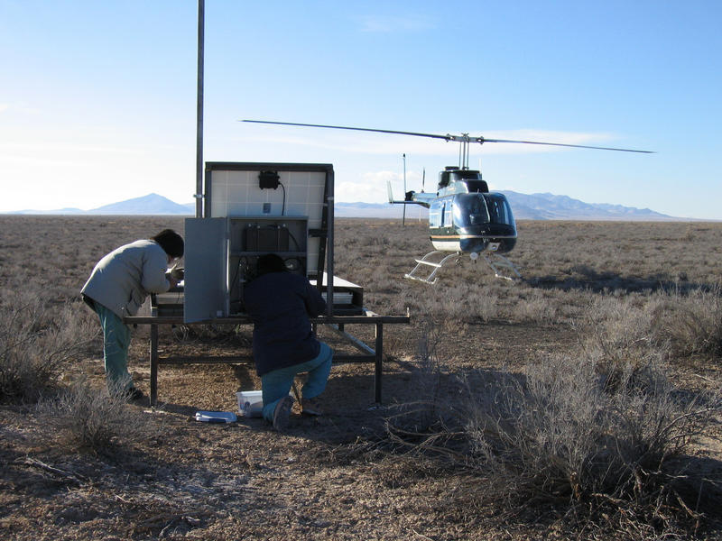
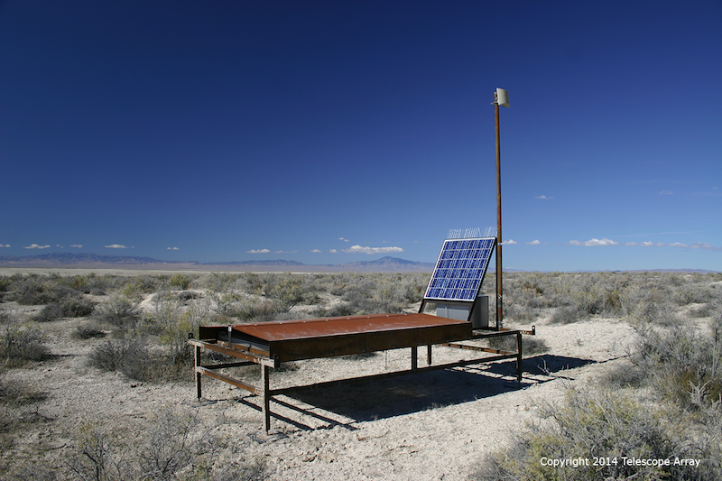
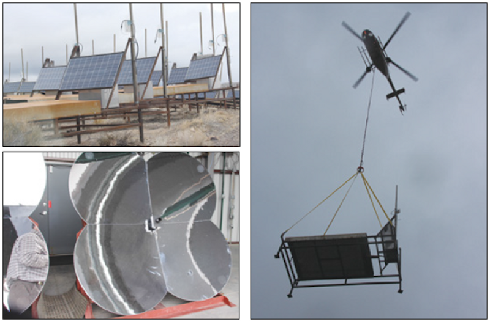

TAAD Home
(current)
Search Our Library
Meet The Authors
telescopearray.org
Login

Repairing one of the scintillators
Delta,UT

Scintillator
Delta,UT

Installing the scintillators
Delta,UT
Previous
Next